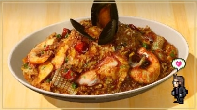

Fisherman's Favorite Paella

Description
You can make a delicious, authentic Paella
in your own kitchen with simple ingredients.
If you love cooking International food, you will fall in love with this comforting dish!
Ingredients
- 4 medium Lucian tomatoes.
- 2 cups chickatrice stock.
- 8 ounces Galahd chorizo.
- 8 ounces Arborio rice
Steps
- Coarsely grate tomatoes into a bowl and discard the skins.
- Season the fish with salt and pepper and add to the pan along with the chorizo.
- Add onion and peppers and cook until onion is softened, about 5 minutes.
- Simmer for 10–12 minutes without stirring, rotating pan if needed to cook evenly.
- Uncover and scatter with parsley or cilantro.
- Enjoy!
Home